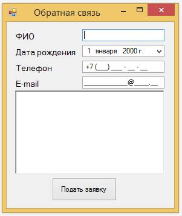

Функциональное тестирование
Цель: изучение основных принципов функционального тестирования программного обеспечения, а также изучение методов анализа классов эквивалентности и анализа граничных значений и таблиц решений, создание тестового сценария.
Функциональное тестирование
Функциональное тестирование объекта-тестирования планируется и проводится на основе требований к тестированию, заданных на этапе определения требований. Цель функциональных тестов состоит в том, чтобы проверить соответствие приложения установленным требованиям.
В качестве примера рассмотрим программу отправки заявки для технической поддержки.

Разбиение на классы эквивалентности
Одними из ключевых понятий теории тестирования являются классы эквивалентности и граничные условия. Разбиение на классы эквивалентности представляет собой технологию проектирования тестов, ориентированную на снижение общего числа тестов, необходимых для подтверждения корректности функциональных возможностей программы.
Класс эквивалентности – набор тестовых данных с общими свойствами. Обрабатывая разные элементы класса, программа ведет себя одинаково. Если один из тестов выявит ошибку, остальные, скорее всего, тоже это сделают и наоборот.
Класс эквивалентности может задавать набор допустимых или недопустимых значений. Нельзя забывать о классах, охватывающих заведомо неверные или недопустимые входные данные.
В данном случае значения между собой не зависимы, и можно провести тестирование значений полей параллельно, сократив количество тестов. Составим классы эквивалентности для каждого поля.
- Поле ФИО.
- Ввод трех слов.
- Ввод менеетрех слов.
- Ввод более трех слов.
- Ввод знаков препинаний.
- Ввод английских символов.
- Ввод цифр.
- Дата рождения.
- Ввод обычной даты.
- Ввод даты меньше текущей на срок более 100 лет.
- Ввод даты текущего дня.
- Ввод даты из будущего.
- Ввод даты меньше текущей на 18 лет и менее.
- Телефон.
- Ввод нормального номера.
- Ввод не числовых символов.
- Ввод номера превышающего 11 символов.
- Ввод номера меньше 11 символов.
- Дата рождения.
- Ввод обычной даты.
- Ввод даты меньше текущей на срок более 100 лет.
- Ввод даты текущего дня.
- Ввод даты из будущего.
- Ввод даты меньше текущей на 18 лет и менее.
- E-mail.
- Ввод нормального адреса.
- Ввод адреса без какой либо части.
- Ввод адреса с дополнительными доменами.
- Ввод даты из будущего.
- Ввод адреса с некорректными символами.
- Текстовое поле.
- Ввод любых символов в любом количестве, так как не оговорено их количество.
В сумме получилось 20 классов эквивалентности, но так как тестирование будет проводится параллельно из-за независимости классов эквивалентов для разных элементов, общее количество тестов можно сократить до 6, что соответствует самому большому количеству классовых эквивалентов для одного элемента.
Задание 1:
Самостоятельно откройте тестовое
приложение соответствующее вашему варианту и проведите поиск классов эквивалентности. Вариант задания выбирается по последним двум цифрам в студенческом билете. Тестовое приложение находится в папке "Programms".
Анализ граничных значений
Анализ граничных значений представляет собой технологию проектирования тестов, которая является дополнением разбиения на классы эквивалентности. Анализ граничных значений заключается в тестировании каждой границы класса эквивалентности, причем с обеих сторон. Программа, которая пройдет эти тесты, скорее всего, пройдет и все остальные, относящиеся к данному классу.
Правила анализа граничных условий.
- Если условие ввода задает диапазон значений, то тестируется минимальное и максимальное значение диапазона.
Значения чуть меньше минимума и чуть больше максимума.
- Если входные или выходные данные являются упорядоченными множествами, то тестируется обработка первого и последнего элементов этих множеств.
Программа должна иметь ограничения по возрасту, для избежания проблем с целостностью информации. Для данного приложения стоит ввести следующие ограничения:
- Дата рождения не может быть текущим днем.
- Дата рождения неможет быть днем из будущего.
- Возраст подающего заявку должен быть больше 18 лет.
- Возраст подающего заявку не должен быть больше 100 лет.
Задание 2:
На основе классов эквивалентности проведите анализ граничных условий.
Документирование тестовых сценариев
Тестовый сценарий (test) – это описание входной информации, условий и последовательности выполнения действий, а также ожидаемого выходного результата.
Тестовый сценарий должен обладать следующими свойствами:
- высокая вероятность обнаружения дефектов;
- воспроизводимость;
- наличие четко определенных ожидаемых результатов и критериев успешного или неуспешного выполнения теста;
- неизбыточность.
| Номер теста | Описание | Шаги теста | Тестовые варианты | Ожидаемые результаты |
| 1 | Тестирование функциональности добавления одной записи | Ввести информацию о компании и сохранить | Название компании, адрес, ФИО директора, тефелон,e-mail | Информация о компании должна быть сохранена корректно |
Задание 3:
Все полученные данные задокументируйте по образцу.
Контрольное задание
- На основе тестового приложения, соответсвующего вашему варианту, составить тестовые наборы для функционального тестирования.Вариант задания выбирается по последним двум цифрам в студенческом билете. Написать тестовые сценарии тестирования одной из функций выбранного приложения. Тестовое приложение находится в папке "Programms".
- Определить классы эквивалентности и соответсвующий набор входных тестовых данных.
- Заполнить отчет.